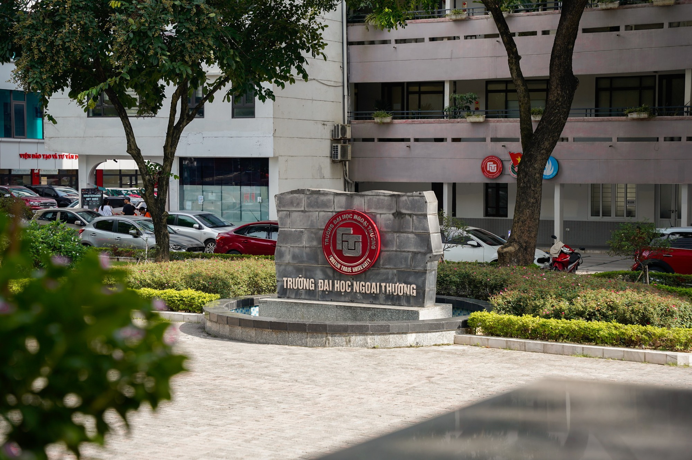
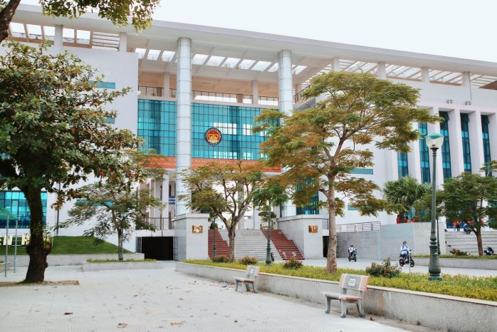
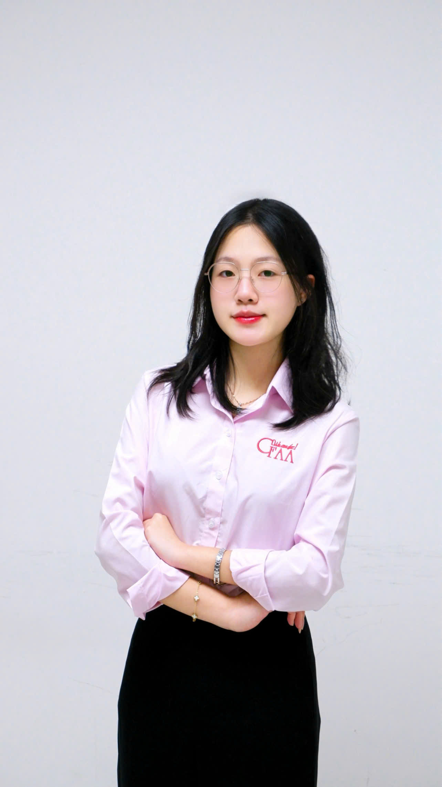

Foreign Trade University
Student of Accounting & Auditing in the ACCA-Oriented Advanced Program.
This is where I am strengthening my academic foundation and building my professional direction toward auditing.
Creative • Professional • Personal
Accounting & Auditing (ACCA-Oriented Advanced Program) Student at Foreign Trade University
I am an introverted but active student who values discipline, responsibility, and meaningful growth. I aspire to become a professional auditor while continuing to grow as a positive, proactive, and reliable person.
Profile Snapshot
I believe professionalism and creativity can exist together. I value structure, sincerity, and continuous improvement.
Future Goal
My long-term direction is to become an auditor with integrity, analytical thinking, and strong responsibility.
Creative Identity
Dancing is an important part of my confidence, expression, and personal energy.
General Information
Personal background, personality, and overall profile.
My name is Hoang Nguyet Ha, born in 2006. My hometown is Ninh Binh and I am currently living in Phao Dai Lang, Hanoi.
I am naturally introverted, but I actively participate in both academic and extracurricular environments.
I am studying Accounting & Auditing under the ACCA-Oriented Advanced Program at Foreign Trade University.
I am also a tutor for Literature and Basic English for grades 1–2.
I see myself as a positive, proactive, and responsible person. I value discipline, sincerity, and long-term self-development.
Education
The educational environments that shaped my thinking and development.

Student of Accounting & Auditing in the ACCA-Oriented Advanced Program.
This is where I am strengthening my academic foundation and building my professional direction toward auditing.

Specialized in Literature.
This environment helped me develop analytical reading, writing ability, expression, and disciplined study habits.
Experience & Leadership
Experiences that reflect leadership, commitment, and professional growth.
A role that has strengthened my sense of responsibility, teamwork, and community contribution.
This reflects my discipline, awareness of collective responsibility, and commitment to personal development.
I am a member of the Professional Board of CFAA – Future Auditors & Accountants Club.


I participated in the Organizing Committee of TAC (Talented Auditor Cup), a large-scale academic competition connected to the Accounting–Auditing field.
This experience helped me strengthen coordination, planning, teamwork, and event execution skills in a professional environment.

I was also part of the Organizing Committee of TaXpert, another large-scale activity in the Accounting–Auditing area.
Through this, I gained experience in communication, collaboration, organization, and contributing to events with a broad student reach.
Talents & Activities
My profile is not only academic — it is also expressive and dynamic.
Dancing is one of my strongest personal talents. It helps me express confidence, rhythm, and energy in a creative way.
I am a member of the KDC K-pop Cover Team. Through this activity, I continue to develop stage presence, teamwork, confidence, and artistic expression.
Future Direction
My future path is shaped by ethics, clarity, and consistent development.
My long-term goal is to become a professional auditor who works with precision, integrity, and accountability.
I want to continue becoming someone who brings positive energy, discipline, and reliability into every environment.
I believe growth comes from consistency, openness to learning, and the willingness to improve through every experience.
Contact
I hope to continue growing into a capable auditor and a positive, responsible person who contributes meaningfully wherever I go.
Full Name: Hoang Nguyet Ha
Phone: 0965680807
Hometown: Ninh Binh
Current Address: Phao Dai Lang, Hanoi
Major: Accounting & Auditing ACCA
Orientation: Aspiring Auditor
Club Role: CFAA – Professional Board Member
Call Me